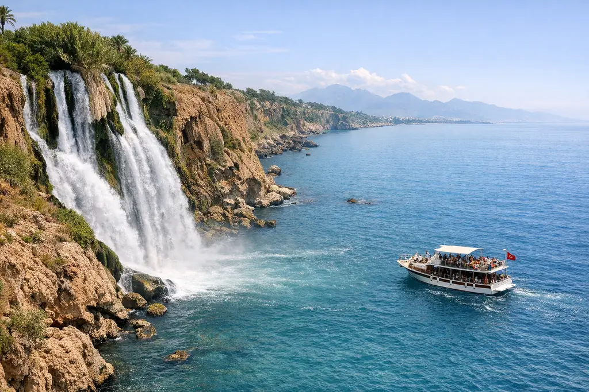
Roteiro Antália 7 dias
Uma semana na Riviera Turca: um resort à beira-mar, a cidade antiga e as cachoeiras de Düden, o teleférico de Olimpos, Side e Manavgat, e o castelo de Alanya.
PreçoConforme a temporada — peça sua proposta
Guia do destino • Antalya
O turismo em Antália é o endereço das férias de praia na Turquia: mar turquesa, resorts tudo incluído e, bem perto, cachoeiras, cidades antigas e as Montanhas Tauro.
Por que Antália?
Antália fica no litoral sul da Turquia, de frente para o Mar Mediterrâneo, e sua província se estende por uma longa distância, de Kemer, a oeste, até Alanya, a leste, com as Montanhas Tauro descendo até a praia. É uma das cidades turcas que mais recebem turistas, graças ao longo período de sol e ao grande aeroporto internacional (AYT). A temporada de praia aqui é longa, e nadar costuma ser possível do fim da primavera até meados do outono.
O coração da cidade é Kaleiçi, a cidade velha, com suas ruas de pedra, casas otomanas, porto antigo e o Portão de Adriano, romano. Ao redor ficam as Cachoeiras de Düden, que despejam suas águas direto no mar, a longa Praia de Konyaaltı e o teleférico de Olympos, que sobe ao topo do Monte Tahtalı, acima de Kemer. Você pode circular por esses pontos em um único dia com motorista particular, ou de barco do porto antigo até as cachoeiras. À noite, Kaleiçi e o porto antigo viram um palco de restaurantes e cafés com vista para o mar.
Antália é famosa por seus resorts "tudo incluído" e "ultra tudo incluído", com piscinas, parques aquáticos, clubes infantis e refeições à vontade, o que a torna ideal para famílias que querem descansar sem planejar cada dia. Há também resorts com conceito familiar conservador, que oferecem piscinas separadas para mulheres e não servem bebidas alcoólicas, e esses são os mais procurados por muitas famílias. Os grandes resorts oferecem atividades diárias para crianças e shows à noite, e assim cada pessoa da família encontra algo de que gosta sem sair do local.
Além da praia, você pode visitar o teatro romano de Aspendos, a cidade antiga de Side, o Castelo de Alanya e a Caverna de Damlataş, ou passar um dia no parque temático Land of Legends, em Belek. Organizamos tudo isso dentro do programa Antália de 7 dias, ou acrescentamos Antália a um programa que inclua Istambul, com voo doméstico e traslado do aeroporto. Em Lara, Belek e Alanya há opções para todos os orçamentos, de resorts de luxo a confortáveis hotéis familiares.
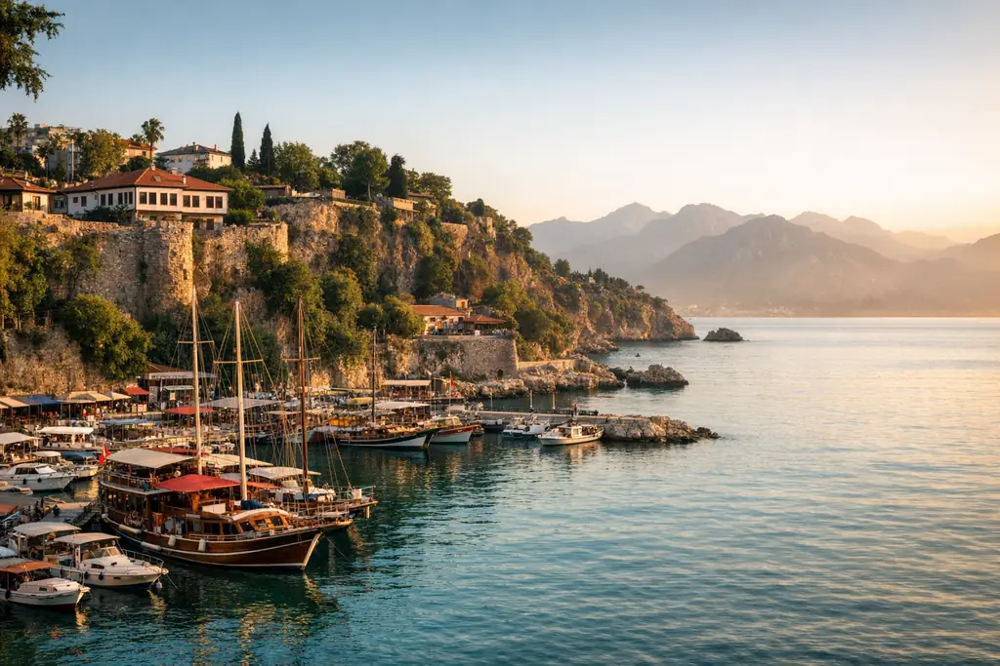
Principais atrações
Uma lista escolhida a dedo do que vale o seu tempo em Antália, com as visitas organizadas de forma inteligente em nossos programas.
Ruas de pedra sinuosas, casas otomanas de madeira e cafés com vista para o porto antigo, mais bonitos ao pôr do sol.
Um portão romano de três arcos, construído em homenagem ao imperador Adriano no século II d.C., a entrada mais conhecida de Kaleiçi.
As cachoeiras superiores ficam em um parque verde com uma passagem atrás da água, e as inferiores caem de um penhasco rochoso direto no mar e podem ser vistas de barco.
Uma praia longa de seixos finos e água cristalina, cercada pelas Montanhas Tauro, com calçadão, jardins e restaurantes ao longo de toda a extensão.
Uma longa praia de areia a leste da cidade, ladeada por grandes resorts, com água relativamente calma e adequada para crianças.
Leva você de perto de Kemer ao topo do Monte Tahtalı, a mais de 2300 metros de altitude, para ver o litoral e as montanhas acima das nuvens.
Um dos teatros romanos mais bem conservados do mundo, construído no século II d.C. e ainda sede de apresentações no verão.
Uma cidade litorânea onde as ruínas se misturam à vida cotidiana, mais conhecida pelas colunas do Templo de Apolo à beira do mar.
Um castelo seljúcida numa península rochosa com vista para a Praia de Cleópatra, e abaixo dele a Caverna de Damlataş, com suas formações calcárias.
Um enorme parque temático e parque aquático em Belek, com brinquedos para crianças e adultos e shows à noite, ideal para um dia familiar inteiro.
Um dos maiores aquários com túneis do mundo, com áreas interativas adequadas para crianças nos dias quentes.
Uma cachoeira larga em meio à natureza perto de Side, e da cidade saem passeios de barco pelo rio até a foz, no mar.
Roteiros prontos
Roteiros dia a dia que podem ser totalmente ajustados ao seu número de dias e ao seu orçamento.

Uma semana na Riviera Turca: um resort à beira-mar, a cidade antiga e as cachoeiras de Düden, o teleférico de Olimpos, Side e Manavgat, e o castelo de Alanya.
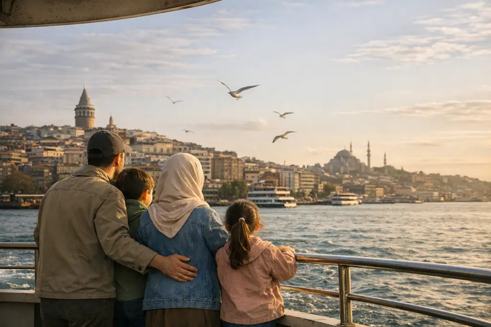
Uma viagem em família em ritmo tranquilo: os marcos de Istambul e lugares para crianças, duas noites em um bangalô em Sapanca, depois Trabzon e Uzungöl entre lagos e fazendas de cavalos.
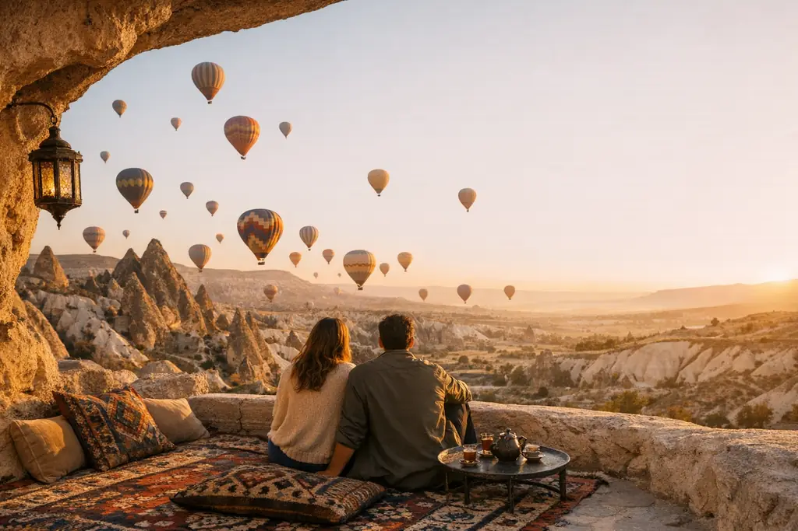
Nove dias para recém-casados: a romântica Istambul no Bósforo, duas noites em um hotel-caverna na Capadócia com opção de balão e duas noites em um bangalô privativo em Sapanca.
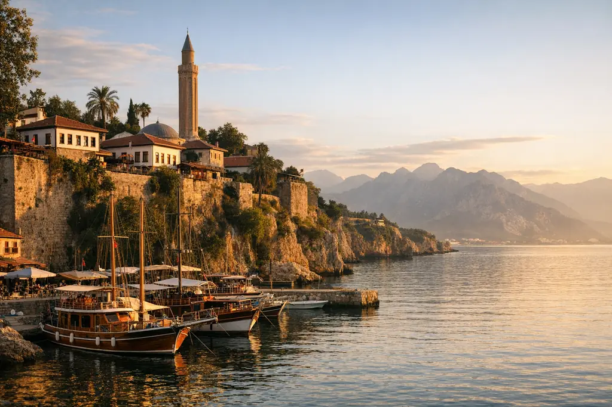
Duas semanas para conhecer a Turquia inteira: Istambul, os hotéis-caverna da Capadócia, a rota histórica de Konya, as praias de Antália, depois Trabzon e Uzungöl.
Passeios de um dia
Onde ficar?
Hotéis em Antália: regiões e opções
Também organizamos para você o traslado do aeroporto e um motorista particular que fala inglês.
Dicas da OYA
Monte sua viagem
Preencha o formulário e você receberá, pelo WhatsApp, um roteiro sugerido com opções de hotéis e deslocamentos.
Perguntas e respostas
Lara e Belek para grandes resorts com praias de areia e clubes infantis, Konyaaltı para quem quer o mar e a cidade juntos, e Alanya para resorts familiares e halal de categorias variadas.
No sistema tudo incluído, as refeições principais, os lanches e as bebidas dentro do resort estão incluídos no preço, enquanto o ultra tudo incluído costuma acrescentar opções mais amplas, como restaurantes à la carte e serviços extras. As condições variam de resort para resort, e explicamos a você antes de reservar.
De junho a setembro a água é morna e o tempo é estável; maio e outubro são indicados para quem prefere temperaturas mais baixas e menos gente. O inverno é ameno, mas não é temporada de banho de mar para a maioria dos visitantes.
Sim, há resorts com conceito familiar conservador, especialmente em Antália e Alanya, com piscinas separadas para mulheres e sem bebidas alcoólicas. São em número limitado e lotam cedo no verão, então reserve com bastante antecedência.
Cerca de uma hora e quinze minutos a uma hora e meia, com muitos voos diários dos aeroportos de Istambul e Sabiha Gökçen. Também operam voos diretos para Antália a partir de algumas cidades árabes, e os horários variam conforme a estação.
Antália é mais adequada para famílias graças aos seus grandes resorts, à variedade de passeios e aos resorts halal, enquanto Bodrum serve a quem busca o clima de marinas, iates e baías tranquilas. Ajudamos você a escolher de acordo com o seu estilo de viagem.
Do guia da OYA
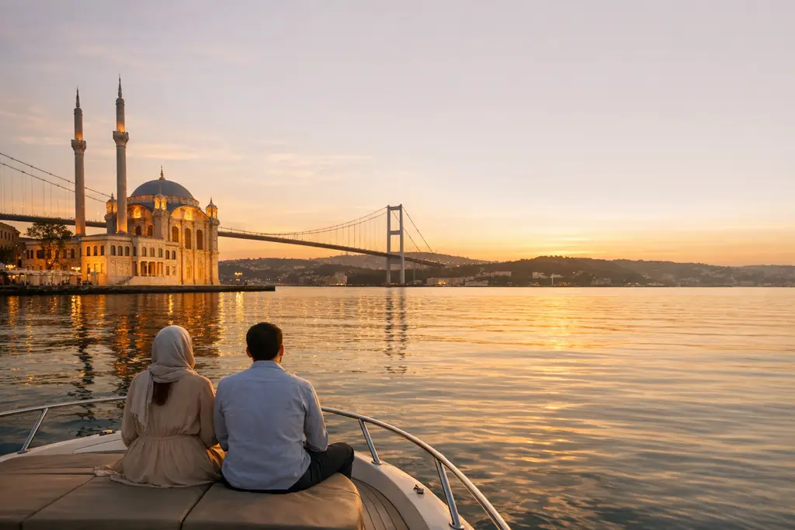
Guia para casais que escolhem o destino de lua de mel na Turquia de acordo com a estação e o gosto, com tabela comparativa, roteiro sugerido de 9 dias e toques românticos que fazem a diferença.

A Turquia tem climas variados, então o que serve para Istambul pode não servir para Antália ou Uzungöl no mesmo mês. Um guia mês a mês ajuda você a escolher a época e o destino juntos.
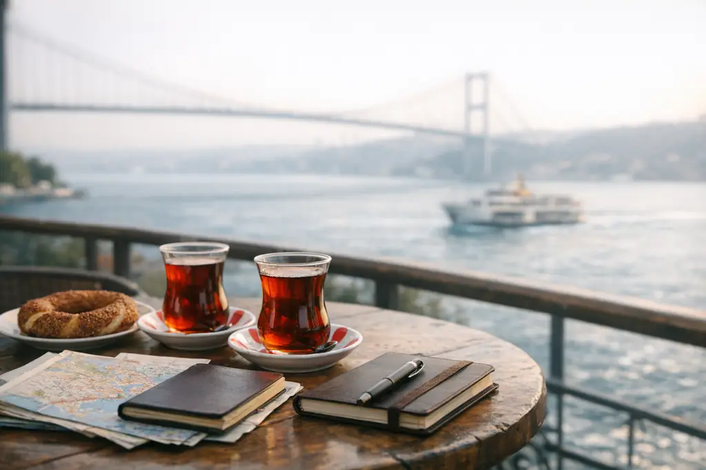
Em vez de números genéricos que não combinam com a sua viagem, explicamos os componentes do custo de viajar para a Turquia e o que os aumenta ou reduz, com uma forma simples de calcular o orçamento de uma semana e dicas práticas de economia.
Descubra mais
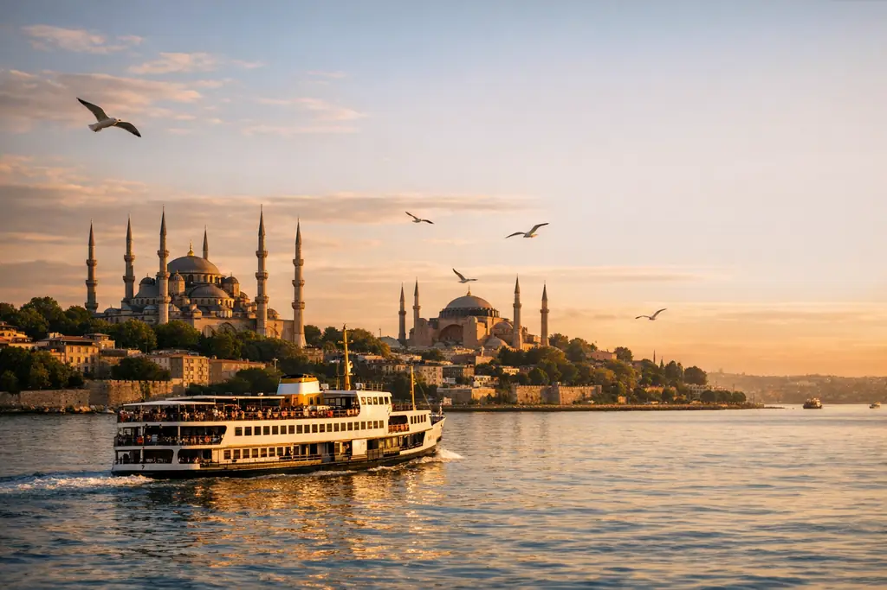
A cidade dos dois continentes e o encanto do Bósforo
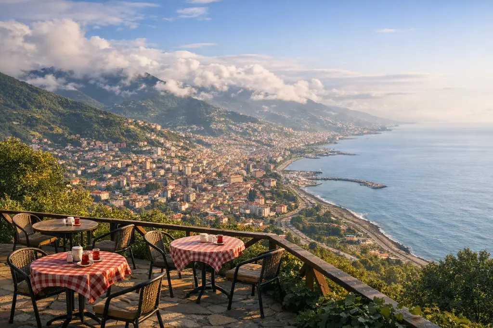
Porta de entrada do verde Mar Negro turco
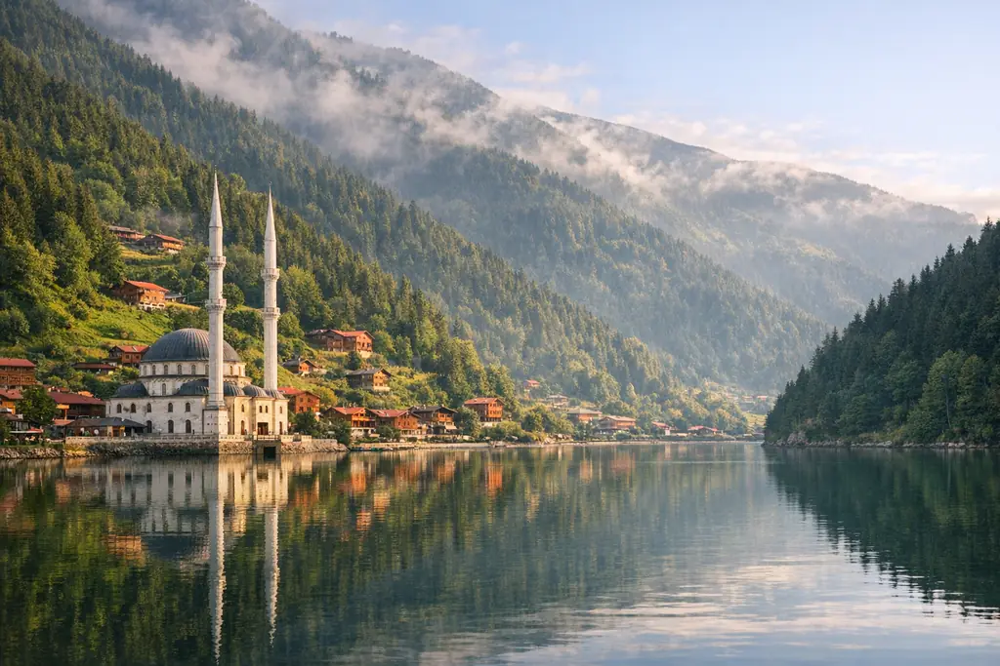
Um lago entre nuvens e florestas
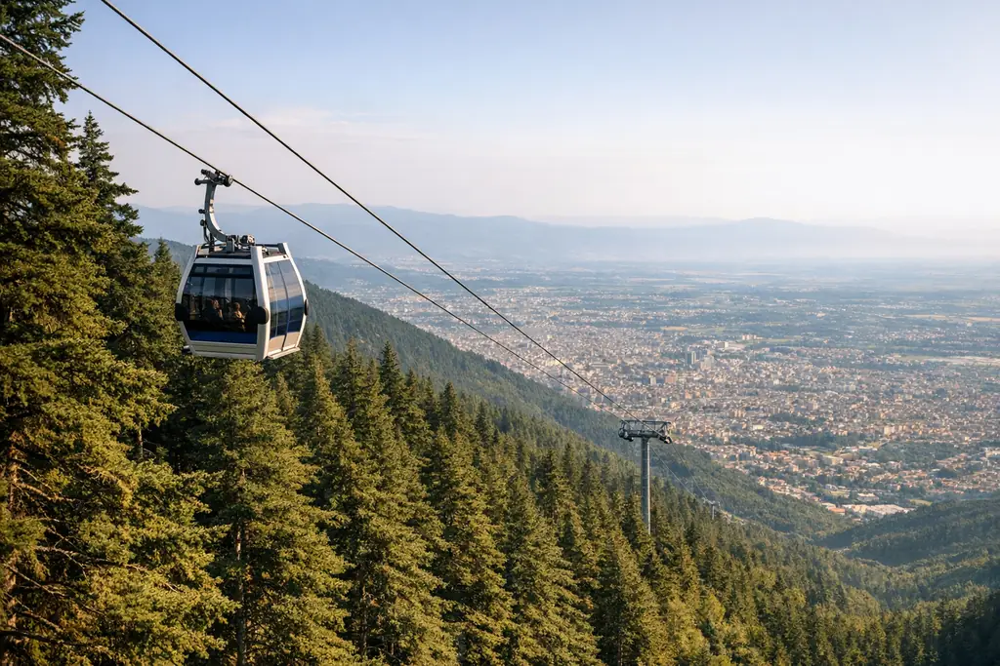
A primeira capital otomana e a montanha de neve
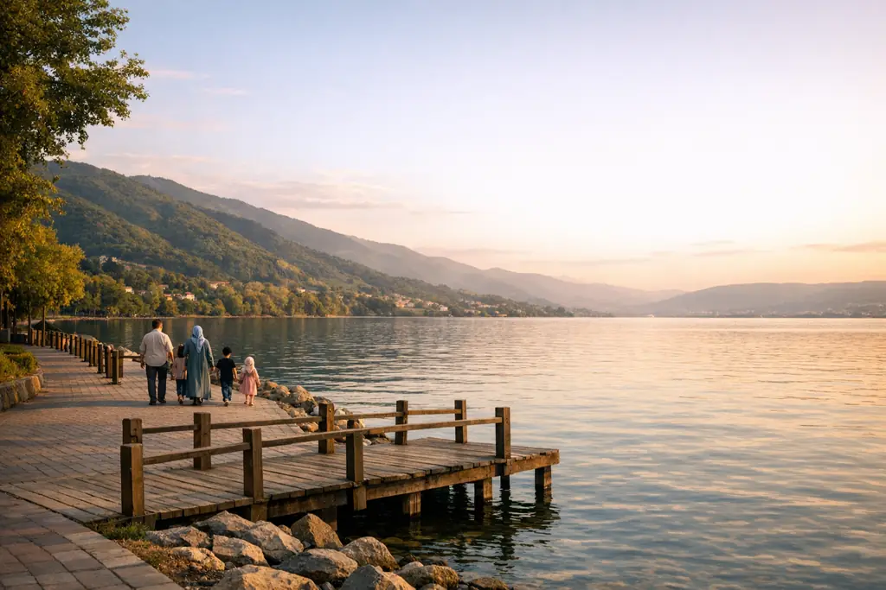
Lago e florestas a duas horas de distância
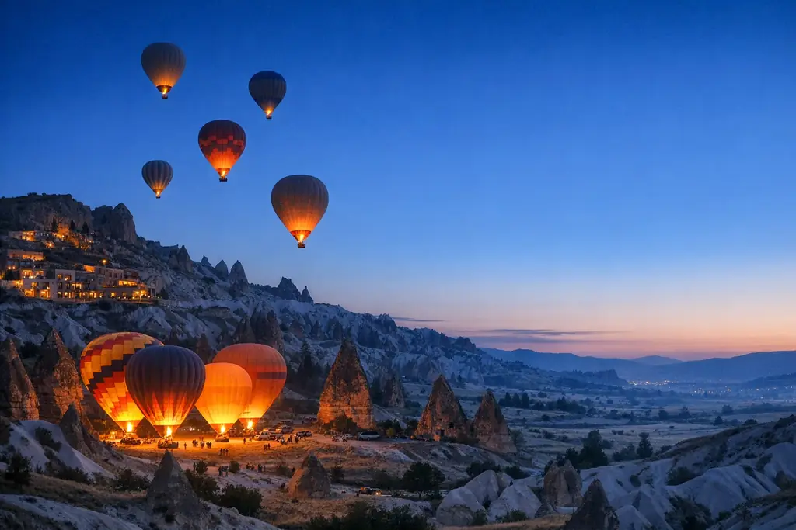
Balões ao nascer do sol sobre as chaminés de fadas
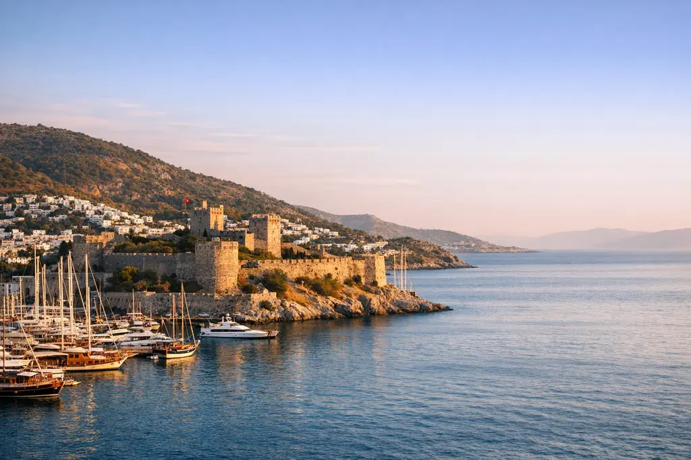
Baías do Egeu e marinas de iates
Atendimento pessoal do início ao fim
Conte-nos o destino, as datas e o número de viajantes, e você receberá uma proposta detalhada em pouco tempo — sem nenhum compromisso.